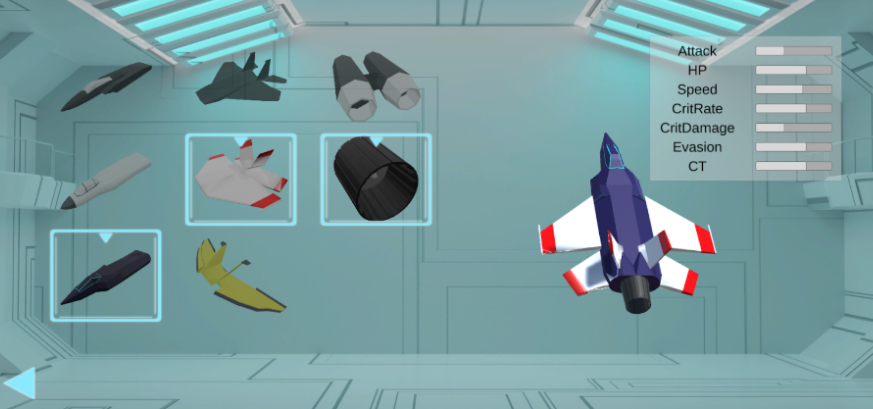
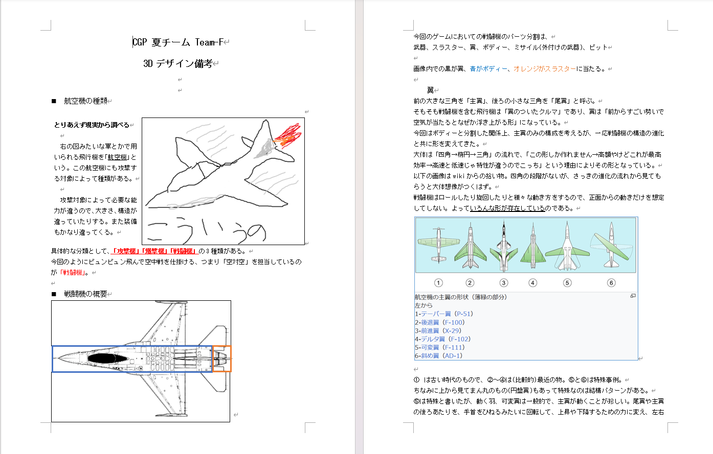
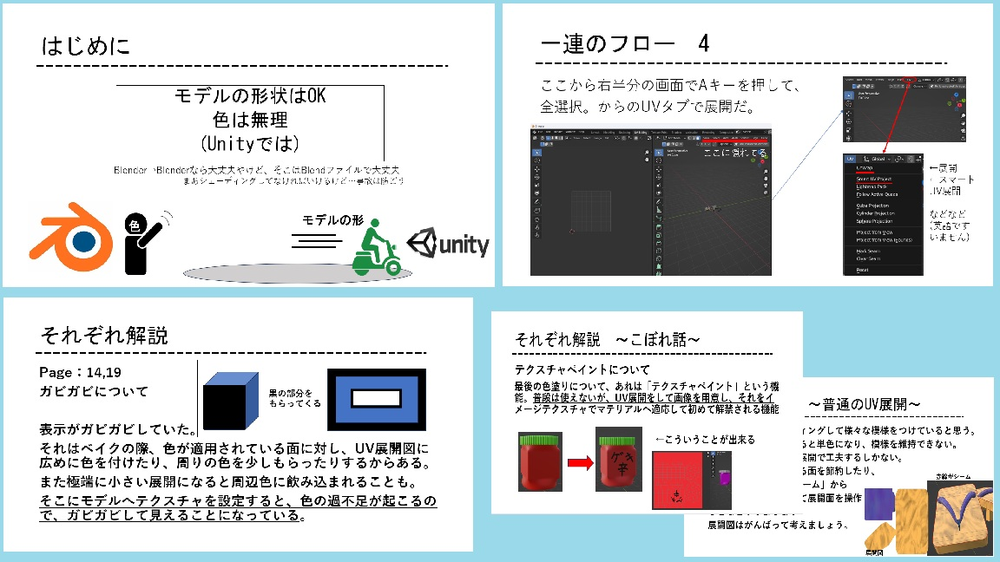

AlienAssault
パーツ変更が可能な2Dシューティングゲーム

1. プロジェクト概要
ゲーム内容
ゲーム制作サークルの新入生イベントにて制作した、自機パーツの変更が可能なシューティングゲームです。本体を動かしながらエイムと発射を行う忙しい操作感が特徴となっています。
パーツに応じて性能が変化するほか、全3ステージにそれぞれボスがおり、各ステージにおいても1～9までの9段階難易度調整が行えます。
チーム概要
チーム内には専任のプランナー（本団体ではディレクターなども含むゲーム仕様にまつわる複合職）が不在であり、各部門がコンセプトだけを共有し、半ば独立状態で作業を行いました。
全体の企画はチーム全体で行ったものの、細かな仕様までは決まっていなかったため、各メンバーが自分の領分を自己裁量で進める場面が多くありました。
画面内に登場する自機や敵機などは3DCG（Blender）にて作成されており、部門間での連携が必要な場合や自身の領分を超える部分については、全体会議の議題として持ち出し連携を図りました。
作品アクセス
作品は UnityRoom にて公開されています
2. 3DCG制作における技術的な工夫
カスタマイズ機能に合わせたモデリング設計

自機のパーツ（翼、スラスターなど）をゲーム内で変更できる仕様に対応するため、各パーツを独立してモデリングしました。組み合わせた際にボディ部分に対して翼やスラスターのサイズ感が破綻しないよう、全体のサイズバランスやパーツ同士の厚みの微調整を徹底して行いました。
そのためゲーム内では規格の違和感なく組み換えが行えるようになりました。
ゲームエンジンへの組み込みを見据えた最適化
モデリングしたアセットをUnityへスムーズに実装するため、出力時のワークフローを整備しました。多角形ポリゴンの排除、重複頂点の除去、面の表裏確認、スケールや変位のリセットなどをチェック項目として徹底し、プログラマ側の組み込みコストを最小限に抑える工夫を行いました。
3. チーム開発におけるマネジメントの貢献
対象物の構造調査とデザイン基盤の共有

本作の自機である「戦闘機」は日常的に馴染みが薄く、さらにパーツ分割の仕様を満たすためには、対象への深い構造理解が不可欠でした。そこで、戦闘機の概要や分類、ゲーム内での適切なパーツの分け方について自ら調査し、図解入りの資料を作成・共有しました。これにより、3D班内でのデザインの方向性と構造の認識を統一し、手戻りの少ないスムーズな制作進行を実現しました。
初学者への技術的サポートと自走環境の構築

3D制作に不慣れなメンバーがツールの操作や専門用語でつまづかないよう、口頭でのサポートに加え、ベイク作業の手順をまとめたドキュメント（スライド）を作成・共有しました。
「なぜその処理が必要なのか」という前提知識から、表示がおかしくなった際のエラー解決策（トラブルシューティング）までを網羅することで、メンバーが独力で課題を解決して自走できる環境を整え、チーム全体の生産性を大きく底上げしました。
プランナー不在の中での全体進行管理
チーム内に専任のプランナー（ディレクター）が不在だったため、率先して全体会議の司会進行とタスクの進捗管理を行いました。メンバー間での仕様の認識合わせや、最終発表に向けた資料の構成案作成まで幅広く担当し、プロジェクトを無事に完成へ導きました。
プロジェクトの軌跡と反省/学びについて
プロジェクト全体が終了した直後の振り返りを公開記事向けに内容を改変してまとめました。
全体の具体的な流れや学びをまとめています。